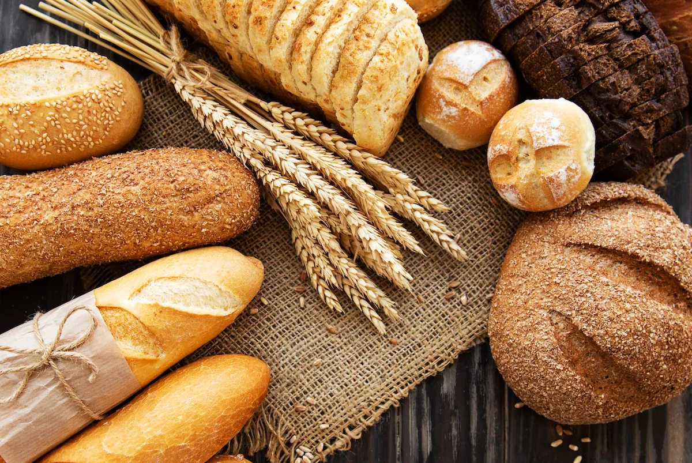
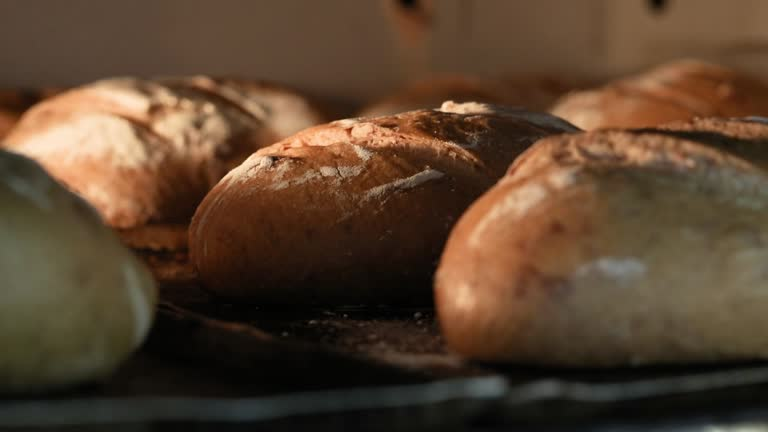

Ons Heerlijke Brood
Terug
Wij bakken dagelijks vers brood met de beste ingrediënten. Onze specialiteiten:
- Volkoren brood - gemaakt van 100% volkorenmeel
- Wit brood - luchtig en zacht
- Zuurdesem - traditioneel lang gerezen
- Meergranen - met diverse zaden en pitten
Bekijk hieronder nog een lijst met de ingrediënten die je kan toevoegen: